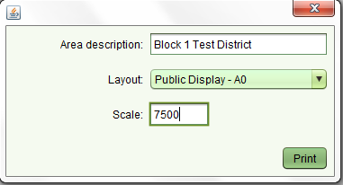

Prepare Public Display Plots
In this step maps required for public display are produced. Parcels are annotated with Parcel Number.
The Map window will zoom to the extent of parcels within the specified systematic registration block.
Parcels in adjacent blocks will only be shown without any (parcel number) annotation
Steps
- From the Dashboard form click on the Systematic Registration – Public Display Maps menu option
and enter the Public Display Date & Block name. Click on the Map button
- The map window will display zoomed to the extent of all systematic registration parcels
within the block
- Click on the Public Display print icon (larger than the regular print icon).
In the Public Display screen that displays enter the Block Name and systematic registration district name
in the Area description field. Select the correct layout (usually Public Display – A0)
and round the scale accordingly.
- Click on the Print button
- A pdf image of the map will be generated, based on what levels were displayed and the scale entered.
This map can be printed or plotted directly from this display or saved for printing later

Also See